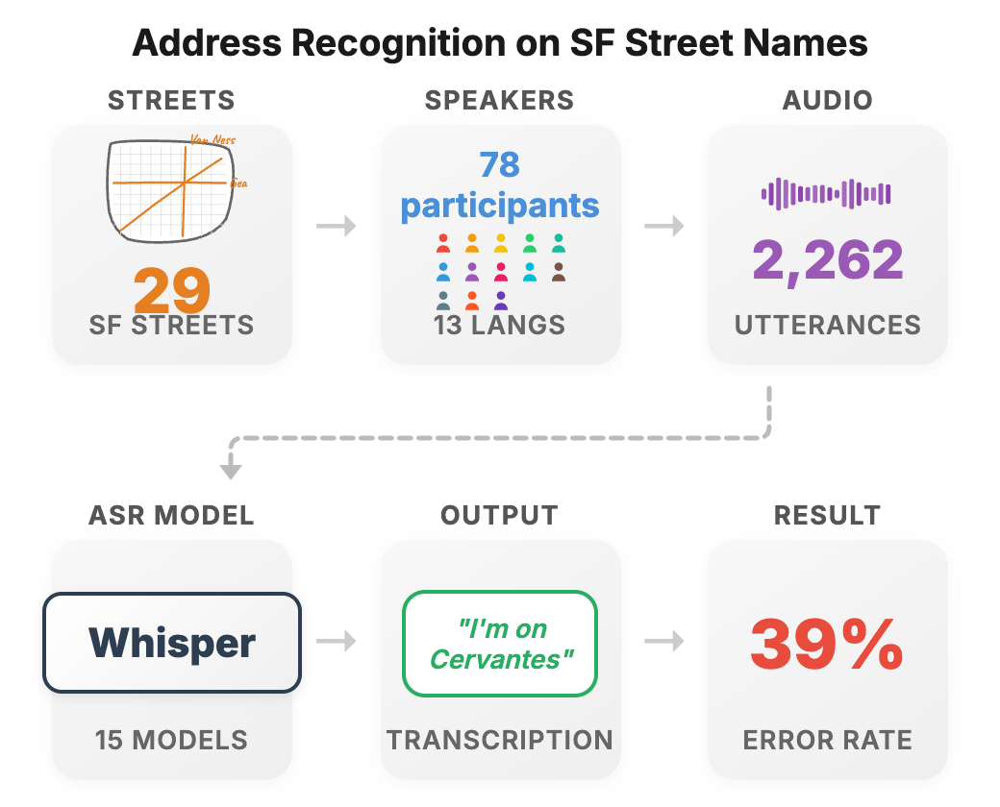
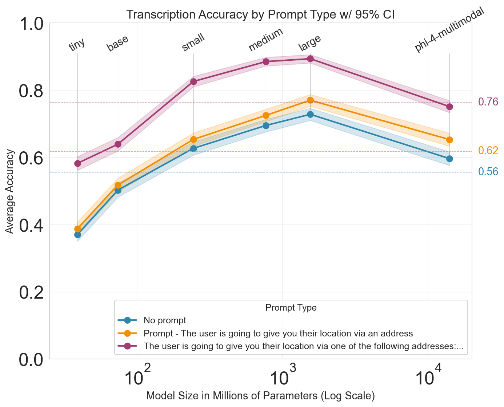
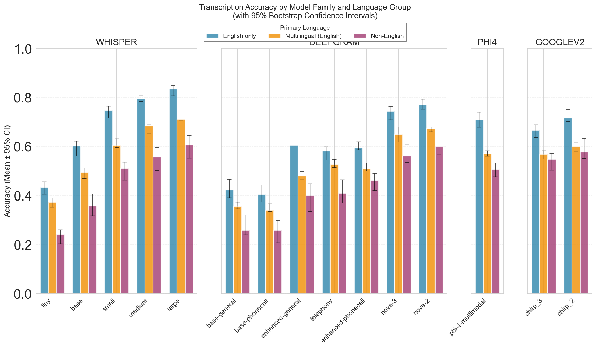
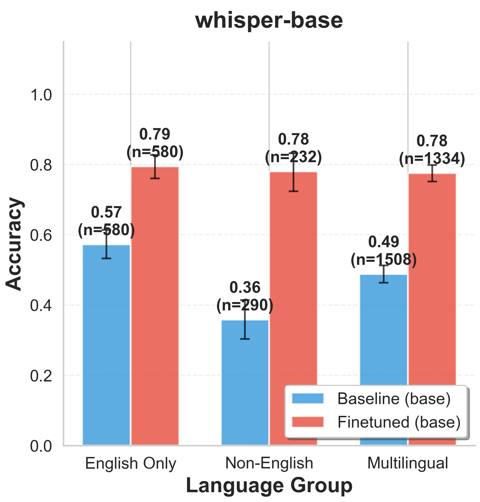
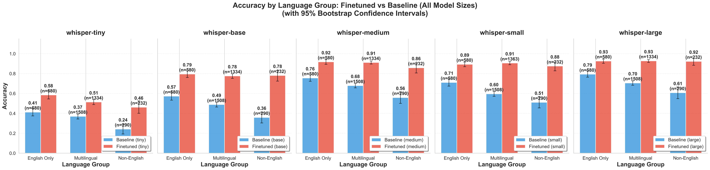
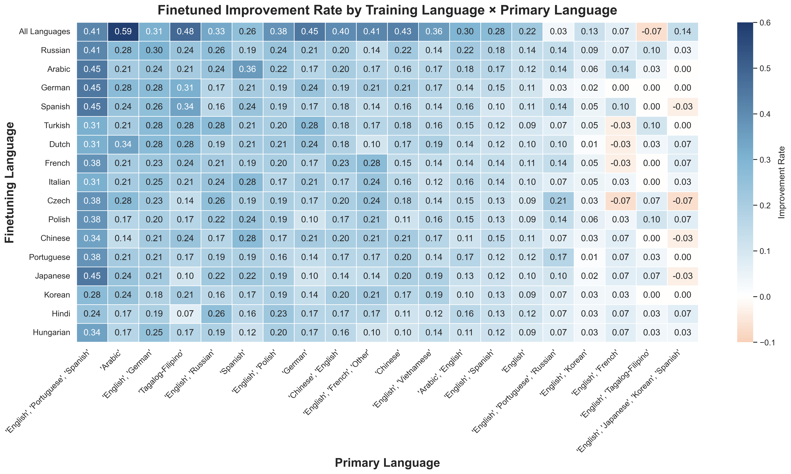

We evaluate 15 speech recognition models from OpenAI, Deepgram, Google, and Microsoft on recordings of U.S. street names from linguistically diverse speakers.
Models fail on 44% of street names overall, with non-English primary speakers experiencing a near 54% error rate.
Mis-transcriptions cause routing errors 2× larger for non-English speakers.
Fine-tuning with <1000 synthetic samples improves accuracy by up to 71%.

Figure 1. Overview of evaluation pipeline. 29 San Francisco boulevard names are spoken by 78 linguistically diverse participants, producing 2,262 utterances. These are transcribed by 15 ASR models, revealing a 39% transcription error rate.
Key Numbers
The Scale of the Problem
Despite achieving low word error rates on standard benchmarks, state-of-the-art speech recognition systems
frequently fail on short, high-stakes utterances in real-world deployments.
44%
Average street name transcription error rate
15
Models evaluated from 4 major providers
5,862
Voice recordings across two benchmark datasets
71%
Relative improvement with synthetic finetuning
Evaluation
Models Under the Microscope
We evaluate models from the four top-performing speech recognition providers, including production-grade systems
explicitly tuned for telephony and phone-call scenarios.
OpenAI
Whisper Tiny
OpenAI
Whisper Base
OpenAI
Whisper Small
OpenAI
Whisper Medium
OpenAI
Whisper Large
Deepgram
Nova-2
Deepgram
Nova-3
Deepgram
Telephony
Deepgram
Base Phonecall
Deepgram
Base General
Deepgram
Enhanced General
Deepgram
Enhanced Phonecall
Microsoft
Phi-4 Multimodal
Google
Chirp 2
Google
Chirp 3
Many of these models are deployed in production at scale—from ride-hailing to emergency dispatch systems.
Core Findings
Street Names Are a Blind Spot
Even when overall word error rate (WER) is low, models fail disproportionately on the named entities
that carry the most operational importance.

Figure 3. Overall transcription accuracy on SF Streets. Even supplying the full list of 29 target street names in the prompt (purple) yields only ~76% accuracy. Adding a contextual prompt (orange) provides marginal improvement over no prompt (blue).
High Error Rates Across the Board
Whisper-Base achieves only ~50% accuracy on SF street names. Even Whisper-Large (1.5B params) reaches just ~73%, but at 7× the inference cost.
Low WER ≠ Accurate Transcription
Whisper-Large has just 14% overall WER, yet its street name transcription error rate is 27%. Standard metrics hide critical failures.
Context Doesn't Help Much
Adding situational prompts like "The user is going to give you their location" yields almost no improvement in accuracy.
Perfect Knowledge Still Fails
Even when models are given the exact set of 29 possible street names, average accuracy is only 76%. The bottleneck is recognition, not knowledge.
Demographic Disparity
Who Gets Left Behind?
Transcription errors are not distributed equally. Non-English primary speakers experience
systematically worse performance across every model family.

Figure 4. Transcription accuracy by language group across all model families (with 95% bootstrap CIs). English-only speakers (blue) consistently outperform multilingual (orange) and non-English speakers (purple) across every model variant.
Transcription Accuracy by Language Group
English-Only Speakers
64% accuracy
Non-English Speakers
46% accuracy
18-Point Accuracy Gap
Across all model families, non-English primary speakers exhibit 18% lower accuracy compared to English-only primary speakers. This pattern holds for OpenAI, Deepgram, Google, and Microsoft models alike. The participants' primary languages span 13 unique languages including Vietnamese, Spanish, Arabic, Chinese, Korean, Tagalog, and more.
Real-World Impact
When Errors Have Consequences
We query the Google Maps API using model transcriptions to measure the geographic and financial
downstream effects of transcription failures.
1.26 mi
Average Misroute Distance
The average passenger pickup in SF is misrouted by 1.26 miles due to transcription errors—about 5 minutes of city driving.
2×
Disparity Multiplier
Non-English speakers experience routing errors nearly twice as large: 2.4 miles vs 1.26 miles for English speakers.
43K hrs
Annual Avoidable Delay
Estimated cumulative delay per year in San Francisco alone—equivalent to ~5 years of continuous waiting time.
$2.1M
Annual Economic Cost
Conservative estimate of economic cost from transcription-induced misrouting, using standard taxi fare schedules.
These estimates assume all riders are English-primary speakers and represent a lower bound on the true cost.
Mitigation
A Scalable Fix with Synthetic Data
We introduce a synthetic data generation approach that produces diverse pronunciations of street names
using open-source text-to-speech models. Fine-tuning with fewer than 1,000 samples yields dramatic improvements.
Figure 6. Synthetic data generation pipeline. Voice samples from Common Voice are cloned via XTTS. The model generates foreign-language speech with embedded English street names (e.g., "Me llamo... Washington"), and the street name audio is automatically extracted.

Figure 7. Improvement from fine-tuning Whisper-Base with synthetic data. Non-English speakers see a 71% relative improvement (0.36 → 0.78). Multilingual speakers improve by 27%. English-only speakers see gains with no regressions. Confidence intervals via bootstrap resampling (n=10,000).
71% Relative Improvement
Non-English primary speakers see up to 71% relative improvement in street name transcription accuracy after fine-tuning with synthetic data.
Cross-Language Generalization
Improvements generalize even to languages not in the training data (e.g., Vietnamese speakers benefit from training on other languages).
No Regressions
English-only speakers maintain their baseline performance—gains for non-English speakers come without harming existing accuracy.
Open-Source & Reproducible
The entire pipeline uses open-source models (Coqui XTTS) and public datasets (Common Voice), making it accessible for practitioners.
Key Insight: Language as Style Transfer
Voice cloning models normalize accents when generating English. Our breakthrough was to generate speech in a non-English language while selectively inserting English street names. For example, generating Italian speech for "Buongiorno, mi chiamo... Washington" and isolating the English word, which inherits the Italian phonetic style. This produces diverse, naturalistic pronunciation variants without mimicking stereotypical accents.

Figure 8. Accuracy gains from fine-tuning hold across all Whisper model sizes (tiny through large). Non-English and multilingual speakers see consistent improvements at every scale, with no regressions for English-only speakers.

Figure 10. Fine-tuned improvement rate by synthetic training language (rows) × speaker primary language (columns). Training on all 16 languages combined (top row) yields the best overall gains. Russian, Arabic, and German contribute the largest individual-language improvements.
Benchmark Datasets
Two New Datasets for the Community
We release both datasets as benchmarks to enable future research on named entity recognition in speech systems.
ChicagoDallasHoustonJacksonvilleLos AngelesNew York CityPhiladelphiaPhoenixSan AntonioSan DiegoSan FranciscoSan Jose
Citation
Cite This Work
If you use our datasets or findings in your research, please cite:
@article{zhou2026sorry,
title={"Sorry, I Didn't Catch That": How Speech Models
Miss What Matters Most},
author={Zhou, Kaitlyn and Bartelds, Martijn and
Bianchi, Federico and Zou, James},
year={2026},
note={Preprint}
}